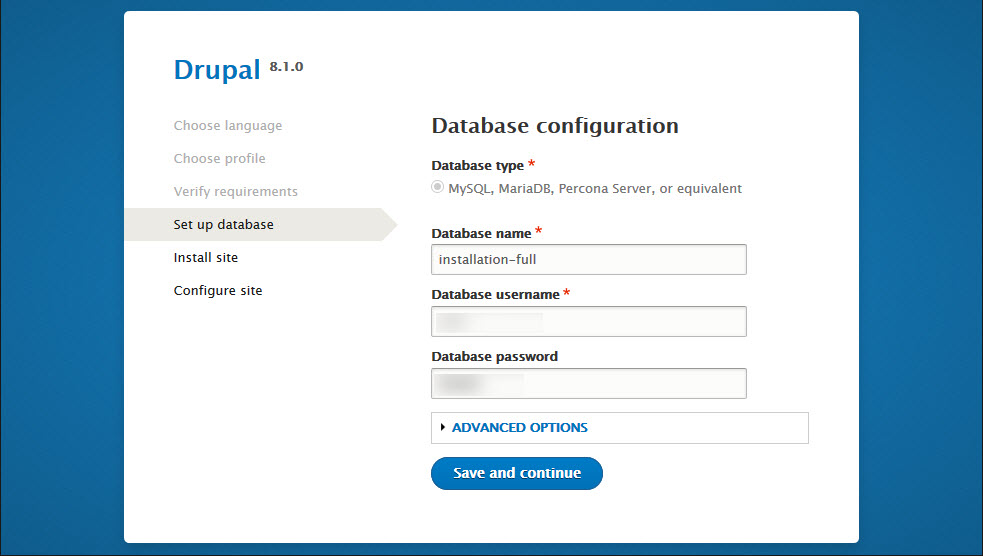

| Documentation for the Magazine+ Premium theme for Drupal 8 |
Magazine+
Premium Drupal 8 theme Documentation
A stylish mega-theme for news and magazine Drupal 8 sites. With a special focus on accessibility and social sharing.
Contents
1. Introduction
1.1. What’s in the Pack
1.2. Credits
2. Installation
2.1. Install as a full Drupal distribution (with all features as seen in demo)
2.2. Install as a simple theme over existing Drupal site
2.3. Install over existing Drupal installation, with the special features
3. Basic Theme Overview
3.1. Theme regions
3.2. Style Guide
3.2.1. Typography
3.2.2. Shortcodes
3.3. Theme Settings
3.3.1. Basic Settings
3.3.1.1. Change the Breadcrumb separator
3.3.1.2. Scroll to top
3.3.2. Look ’n’ Feel
3.3.3. Region Settings
3.3.4. Post Features
3.3.5. Theme Layout
3.3.6. Font Settings
3.3.7. Slideshow
3.3.8. Google Maps Settings
4. Modules & Configuration
4.1. Contributed Modules Used
4.1.1. Superfish
4.1.2. Entity Reference Revisions
4.1.3. @font-your-face
4.1.4. Paragraphs
4.1.5. Video Embed Field
4.1.6. Field Group
4.2. Automated image generation and handling
5. Content Types
5.1. Post
5.2. Product
5.3. Slideshow Entry
5.4. Team Member
5.5. Testimonial
6. Views
6.1. Archive
6.2 Featured Video
6.3. Internal Banner
6.4. Latest Posts
6.5 Photo Gallery
6.6. Popular Tags
6.7. Posts
6.8. Posts Carousel
6.9. Posts Slider
6.10 Square Posts Carousel
6.11. Products
6.12. Slideshow
6.13. Team member profile
6.14. Team members
6.15. Testimonials
6.16. User Posts
6.17. Video Grid
7. Custom Block Types
7.1. Background Image Block
7.2. Collapsible block
7.3. Dropdowns block
7.4. Google Map block
7.5. Main Slideshow Block
7.6. Media Tabs Block
7.7. Nodes Slideshow block
7.8. Tabs block
7.9. Video Gallery block
8. Static Blocks
9. How to
9.1. Add a new Post
9.2. Add a new Product
9.3. Add a new Team Member
9.4. Add a new Testimonial
9.5. Publish a post to the slideshow
9.5.1. Post, Product, Team Member or Testimonial
9.5.2. Slideshow entry
9.6. Create new instances (clones) of existing blocks and assign them to regions
9.6.1. Remove blocks from regions
9.7. Allow blocks to be referenced through custom block type fields
9.8. Add a new Background Image block
9.9. Add a new Collapsible block
9.10. Add a new Dropdowns block
9.11. Add a new Google map block (Google map custom block type)
9.12. Add a new Main Slideshow block
9.13. Add a new Media Tabs block
9.14. Add a new Nodes Slideshow
9.15. Add a new tabs block (Tabs block custom block type)
9.16. Add a new Video Gallery block
9.17. Use @font-your-face module to apply any font to your theme
9.17.1. How to add fonts from a premium font library
9.18. Customize the theme
10. Roadmap
Magazine+ 8.x-5.x.x
11. Changelog
Magazine+ 8.x-5.0.0
1. Introduction
You can always find the latest and most up to date version of this document in the following URL:
http://support.morethanthemes.com/customer/portal/articles/2782399
1.1. What’s in the Pack
The Magazine+ for Drupal 8 product pack contains the following:
- Drupal 8 core;
- A database with demo content and configuration;
- The Magazine+ premium theme for Drupal 8, which is based on Bootstrap, with all its assets: HTML5, CSS3, JS, PHP code;
- The License information and references to third-party licenses [licenses], wherever needed.
1.2. Credits
2. Installation
Theme installation guidelines for Drupal 8.
There are two main ways to use Magazine+: (1) install as a full-featured Drupal distribution, and (2) apply as a simple Drupal theme, on top of an existing Drupal 8 core installation.
2.1. Install as a full Drupal distribution (with all features as seen in demo)
At the end of the installation process documented below you will be able to log in to your Drupal site as administrator. To login, once you install, go to
/user/login url
and use the following credentials: u: admin, p: password |
To install Magazine+ for Drupal 8, with the demo content and the full functionality, including Content types, Slider(s), Views pages and blocks, and special layouts, please follow the steps below.
- Place the included “full_installation/site” folder under your Apache server path[1].
- Create an empty MySQL database and take note of the database name.
- In your newly created database, import the “full_installation/database/db_instance.sql” file that comes with the theme. The following screen shows the steps to do this through phpMyAdmin. If your hosting environment does not come with a similar tool installed please ask your hosting provider for assistance on how to import the database file.

- Start the Drupal installation wizard by pointing your browser to the recently created folder, in your Apache server path.

- Continue the installation by selecting the "Standard" installation profile.
If confronted with any warnings, click to continue with installation.
- Enter your recently created database information. This includes the database name and credentials (username/password)you have chosen when creating it, spelled exactly as in step 3 above.

- The installation wizard will recognize that you are using an already populated database and will inform you accordingly. At the same time, the wizard should create all the necessary files your Drupal site needs in order to work properly on your server.
- You are done. Click on the "visit existing site" link, to visit your new site.

- Once you are done with the above, please login to this site through the /user/login url and by using the following credentials: u: admin, p: password.
- Navigate to /admin/reports/status and make sure that there are no errors regarding the “File system” item. In case of errors please make sure to resolve those.
Other errors may exist and should also be taken care of.
- Navigate to /user/1/edit and change the email of the admin user to the one you are using.
- Navigate to /admin/structure/contact and change the recipients email of the contact forms so that you receive the messages in your inbox.
- By default, our theme distribution comes with Drupal 8 caching deactivated, ensuring a smoother experience during any technical work you will need to do post-installation.
Either right after installation, or when you finish building your Drupal 8 site using this theme, it is recommended to activate Drupal caching and aggregation of CSS and JS files, for better performance.
To do so, navigate to /admin/config/development/performance and enable caching (default option: 15 min) as well as the “Aggregate CSS files” and “Aggregate JavaScript files” options.

[1] How to find your Apache server path: if you are deploying online, your hosting provider should be able to provide you this. If you are deploying locally, it will be where your XAMPP or MAMP installation is configured to look into (e.g.: htdocs, in the case of MAMP on Mac OS X).
2.2. Install as a simple theme over existing Drupal site
- Open the simple_theme_installation/theme folder, that came in the pack.
- If working on a local environment, copy the “magazineplus” folder. If working directly on your web environment, select the “magazineplus” folder in order to upload it in the next step.
- Paste or upload the “magazineplus” folder into the corresponding path themes » custom, in your existing Drupal 8 installation. If you don’t have a “custom” folder under themes, it’s strongly recommended to create one.
- Log in to your existing Drupal 8 installation as admin, with your credentials.
- Browse to the "Appearance" section of the Drupal admin environment.
- Find the theme and activate it by clicking “install”.
- Click “Set as default” to make it your default theme.
- Browse to the homepage, then hit "refresh" in your browser. You should now see your site styled using Magazine+.
2.3. Install over existing Drupal installation, with the special features
Important notice: It is strongly recommended that you execute the instructions below on a cloned instance of your production site. This is the safest way to handle this, ensuring that your production site remains unaffected if you make any mistake in any of the steps below.
- Start by creating a full installation of your purchased theme product, with its content types, Views blocks and pages and special features, as advised in section 2.1.1. This will be used for reference and exporting features only and can therefore be installed on your test dev environment.
- Copy the simple Drupal theme from your full product installation above or from the product folder you downloaded, into the clone of your existing Drupal installation, then activate the theme, as described in section 2.1.2. Your existing Drupal installation should be now re-styled according to the looks of your purchased product. However, the parts of the purchased theme product that you are still not seeing are:
- Special Content Types
- Special Views and Blocks
- Special Menus
- Other Special features
- Install the theme required libraries. Just copy the content of the simple_theme_installation/libraries folder of the theme pack into the libraries folder of your installation. If your installation does not have a libraries folder please create it.
- Install the theme required modules. Just copy the content of simple_theme_installation/modules folder of the theme pack into the modules folder of your installation. Finally enable those modules through the Drupal administration interface.
- Adjust Image styles through Home » Administration » Configuration » Media » Image Styles. Use the full installation of the product mentioned in step 1 for reference:
Home » Administration » Configuration » Media » Image Styles
- Reproduce all custom Content Types by using the full installation as a reference to guide you. Make sure you are using the same machine names for the content type and the fields of the content type.
Use the full installation of the product mentioned in step 1 for reference.
Finally make sure that you have also reproduced the display settings in the “Manage form display” and “Manage display” tabs as well as for the teaser and default display.
- Import the views that are included in the simple_theme_installation/configuration/views folder of the theme pack.
Navigate to
Home » Administration » Configuration » Development » Synchronize » Import
and select the single item tab. Make sure you select the “View” configuration type, paste the content of each .yml file into the text area and save the configuration. You will have to do this for each file in the simple_theme_installation/configuration/views folder of the theme pack.

- Reproduce all custom block types by using the full installation as a reference to guide you. Navigate to Home » Administration » Structure » Block layout » Custom block library and select the Types tab.
Make sure you are using the same machine names for the custom block type as well as the corresponding fields. This procedure is similar to step 6 above.
Finally make sure that you have also reproduced the display settings in the “Manage form display” and “Manage display” tabs. - Configure your existing blocks to make use of the new regions the premium theme provides. You can use multiple instances of the various blocks, as well.
3. Basic Theme Overview
3.1. Theme regions
Magazine+ incorporates the 37 regions shown below, to help you take advantage of the flexibility Drupal regions provide.
3.2. Style Guide
3.2.1. Typography
Magazine+ includes a complete Style Guide with rules and styling for typography at the following URL in your installation:
/style-guide
3.2.2. Shortcodes
To help you get up to speed with developing your Drupal site, Magazine+ also includes a detailed Shortcodes page, with the most common UI elements you would need, themed, at the following URL in your installation
/shortcodes
3.3. Theme Settings
Magazine+ comes with a great collection of theme settings, so that you can customize the looks, layout, interaction and functionality of your site through the Drupal admin user interface, without having to mess with the code (although that is always perfectly possible).
The theme comes with 8 main groups of theme settings:
- Basic Settings
- Look ’n’ Feel
- Region Settings
- Posts Features
- Theme Layout
- Font Settings
- Slideshow Settings
- Google Maps Settings
All theme settings are available under the Appearance section, in the Drupal admin environment:
Home » Administration » Appearance » Appearance settings
Important notice:
With all theme settings, remember to hit “Save configuration” when you change something, to see your edits reflected on the site running Magazine+.

3.3.1. Basic Settings
A selection of theme settings affecting the site globally.
The theme settings are explained in detail below, point-by-point.
3.3.1.1. Change the Breadcrumb separator
Change the Font Awesome character that will be the breadcrumb separator in your site. The default is “fa-angle-right”, but you can also use any Font Awesome icon that better suits your needs.
3.3.1.2. Scroll to top
Enable or Disable the display of the Scroll to top button.
Change the icon that is displayed over the button. The default icon is “fa-angle-up”.
Select the region that you want the scroll-to-top button to be displayed in.
3.3.2. Look ’n’ Feel
Select the Color Scheme you wish to use and disable or enable the full-page border.
Magazine+ comes in multiple built-in curated color schemes to help you style your site according to your preferences.
Important notice:
All color schemes are developed in CSS3 code, without proprietary graphics or software and are therefore also endlessly customizable as detailed in the section “Customize the theme”, further below.
3.3.3. Region Settings
Enables you to choose
- Region-specific Animation settings
- Region specific layouts
- Region specific background colors
- Region specific paddings
- Region specific features (e.g Fixed Header)
for your Magazine+ running site, as shown below, so as to enhance the user experience for your visitors.
With regard to animations in particular, you can choose among a number of built-in animation movements.
If you want to completely remove all animations, you can easily do so, by unchecking the “Animations” option at the top of this tab, then hitting “Save configuration”
3.3.4. Post Features
Magazine+ incorporates some of the most popular accessibility features for your visitors, like
- Time to read
- Reading Progress
- Share links
- Print post
Not only these give your Drupal 8 site a sense of professionalism, but they are also essential for your visitors that are reading your content.
3.3.5. Theme Layout
This specific theme settings allows you to apply the normal (Wide) layout of the theme or change it to boxed.
3.3.6. Font Settings
Magazine+ comes with multiple built-in curated font options, to help you style your site according to your preferences. Based on design quality and the number of characters and language coverage, we have selected several dozens of the most high quality freely available fonts, so you don’t have to lose time experimenting yourselves.
Advice:
It’s generally considered a good typographic advice to use as few fonts as possible and try to provide a visual hierarchy by using HTML tags, spacing and proper line-height, which are all built into the theme.
Because sometimes, though, you may want to use more than one fonts, the typographic structure and options of the theme are broken into four main categories, so you can customize different fonts for each:
Important notice:
All typographic selections are developed in CSS3 code, without commercial fonts or software and are therefore also endlessly customizable as detailed in the section “Customize the theme”, further below.
If the font you wish to use is not available through these theme setting, you could use the included @font-your-face module to import and use any font you wish. You can find out more on how to use this at the corresponding how to topic below (9.18).
3.3.7. Slideshow
Magazine+ comes with the following well-known, widely used sliders:
- The Open Source Flexslider
- The Commercial Slider Revolution
- Owl Carousel
(credits and links are provided in the introductory section)
Depending on your preferences, you can choose to use either of the two sliders, or to have one on certain pages and the other on others, as explained in the “Views Blocks” Section. Here, in the Slideshow tabs from the theme settings you can adjust the settings of the slider you use.
The settings you can choose among include
- Slideshow transition effects,
- Effect duration
- Initial height of the slideshow (Revolution Slider only)
3.3.8. Google Maps Settings
As of June 22 Google has changed their policy regarding the standard plan of Google Maps API. Keyless access to the API is no longer supported.
We have therefore implemented a theme setting to add your own Google Maps API key in order to make authenticated calls and display the Google Map.
Please generate a browser API Key through the documented procedure and input it into the “Google Maps API Key” field. Our implementation will include this while requesting information from the Google Maps API.
The key that comes bundled with the theme is only valid for use in localhost so you will have to create your own once you move to your production server.
4. Modules & Configuration
Overview of the Drupal modules used in Magazine+:
4.1. Contributed Modules Used
4.1.1. Superfish
Magazine+ makes use of the Superfish module and the corresponding library to display multi-level menus. To use, simply add the corresponding superfish block to the region you want and Magazine+ will style the menu accordingly.
The Superfish module also implements a mobile menu that is configured to activate in narrow screen widths (configured through the block settings).
4.1.2. Entity Reference Revisions
This module is a requirement of the “Paragraphs” module.
4.1.3. @font-your-face
This module allows you to import external fonts hosted on Google Fonts, Font Squirrel, Adobe etc. It is not used in the default installation of Magazine+ however we have prepared the configuration required for you to apply your fonts to specific Magazine+ elements.
4.1.4. Paragraphs
This module allows you to define collections of fields to be used within other entities. For example the Fancy tabs custom block is powered by a paragraph field that contains a Title field, a Subtitle field as well as the referenced block.
4.1.5. Video Embed Field
This module provides a field that is used in different content types that provides video (Youtube & Vimeo) support.
4.1.6. Field Group
This module is used to group similar fields together in order to provide better Content editing experience.
4.2. Automated image generation and handling
Under the hood, Magazine+ comes with pre-configured image presets ready to be used.
All the content types make use of this feature and produce all necessary thumbnails and other derived images automatically.
To make use of the automated image generation and handling, simply upload your images and Magazine+ will use those for the Front Page and any other place where a derived image is needed.
5. Content Types
Magazine+ comes with five, special built-in Content types:
- Post
- Product
- Slideshow entry
- Team Member
- Testimonial
Of course, Magazine+ also supports the default Drupal content types: Article, Basic page etc.
5.1. Post
Use the Post content type to create and publish articles making use of all the special functionality built into the Magazine+ theme, like “time to read”, “% read so far”, social media sharing and more.
5.2. Product
A Product post is ideal for creating and showcasing your products. It comes with the option to be featured at the front page slide show. It also provides the ability to attach one main product image, which is automatically adjusted to fit into the website layout. Further to that, what’s a particularly great time-saver about a Product post, is that it provides the ability to attach a series of images, thumbnails of which are automatically created and adjusted to fit into the website layout, wherever needed.
5.3. Slideshow Entry
A Slideshow entry is ideal for creating announcements and/or commercial banners, as well as other front-page messages for your website. Use it to promote any page of your website or URL into the front page slideshow. The slideshow entry can carry a title, a teaser and an image linking to an internal path or external link.
5.4. Team Member
The Team member post is ideal for creating a page for each of your team members. Along with a description of your team member’s position, responsibilities and qualifications, it provides the ability to attach an image, which is automatically adjusted to fit into the website’s layout. And what’s great about Team member posts, is that they are all collected under the “About us” page.
5.5. Testimonial
The Testimonial entry is perfect to showcase the words of love from your users and customers. Use it to easily publish testimonials on your site. A special View Block and a View Page are already configured to show them off perfectly.
6. Views
One of the most powerful features of Drupal is the Views module, which in Drupal 8 is anymore in core.
Further to the default Views blocks, like
- Recent Comments
- Who's new
- Etc.,
Magazine+ comes with many Views implementations, including pages and blocks, that enable you to automate the collection and presentation of information throughout the site. These Views are listed under
/admin/structure/views
Every one of those is also editable via the front-end interface, when logged in as Drupal admin.
6.1. Archive
This is the default core archive view slightly modified only on the theme level. This view includes a view block as well as a view page.
The block displays a per month summary of the published content of your page as well as a listing of teaser nodes for each month.
/archive
6.2 Featured Video
This view block collects and displays the latest Post that is promoted to the front page and that contains a video.
6.3. Internal Banner
This view block collects and displays “Internal banner image(s)” of the active node in a slideshow implemented through Slider Revolution. It is only a visible in node pages that have content in the “Internal banner image(s)” field.
6.4. Latest Posts
This view block collects and displays the latest 3 post nodes of the site.
6.5 Photo Gallery
This view collects and displays showcase nodes in a 4 column grid layout. There is also available a corresponding view block. The view page is accessible through:
/photo-gallery
6.6. Popular Tags
This view block collects and displays all the taxonomy terms used on the site, sorted from the most to the least used.
6.7. Posts
This view collects and displays the latest post nodes of the site. There are 3 different layouts available, Teaser list, masonry and 3 column Grid:
/posts
/posts-masonry
/posts-3-col
6.8. Posts Carousel
This view block collects and displays the latest 20 posts as a Carousel. There are 2 different blocks available by default, the first one collects items that are tagged with the “Promoted Carousel” tag and the second one those that are tagged with the “Featured Carousel” tag.
6.9. Posts Slider
This view block collects and displays the latest 20 posts as a Slider. The default view block collects items that are promoted to the front page and are tagged with the “Highlighted Slider” term.
6.10 Square Posts Carousel
This view block collects and displays the latest 20 posts as a Carousel of Square images. There are 2 different blocks available by default, the first one collects items that are tagged with the “Viral” tag and the second one those that are tagged with the “Breaking” tag.
6.11. Products
Collects and display product nodes with the corresponding style and features. The following layouts are available: 2, 3 and 4 column grid. These views are accessible through:
/products-4-col
/products-3-col
/products-2-col
6.12. Slideshow
Collects and displays nodes that are marked as promoted to slideshow. There are 2 different flavours of the slideshow, Boxed and Full screen. You can also implement a full width slideshow by placing the Boxed Width block in a region that is Full width. You can see each of these blocks at the corresponding demonstration pages:
Boxed
Full Screen
6.13. Team member profile
This view block displays the teaser view of the Team member node that is connected through the corresponding User field to the drupal user. If there is no user connection there is nothing displayed. You can see an instance of this view block at the admin user page
/user/1
6.14. Team members
These view blocks collect and display “Team Member” nodes in a grid layout or as a list. For the list layout there is also a view page available:
/team-members-list
6.15. Testimonials
Collects and displays testimonials nodes in a simple and stylish list. There is also available a simple view block that displays the last 10 testimonials as well as Slideshow powered view block that loops through all of them. The view page is accessible through:
/testimonials
6.16. User Posts
Collects and displays post nodes that are authored by the user of the current user page. If the block is placed in a page other than a drupal user page, this block will return no results.
/user/1
6.17. Video Grid
Collects and displays all nodes that have the corresponding video field populated. There is also a view block available that displays the latest 6 items. The view page can be accessed through:
/videos-4-col
7. Custom Block Types
Magazine+ comes with none, special built-in custom Block types:
- Background Image Block
- Collapsible Block
- Dropdowns Block
- Google Map
- Main Slideshow Block
- Media Tabs Block
- Nodes Slideshow block
- Tabs block
- Video Gallery block
7.1. Background Image Block
This custom block type allows you to create blocks that display a background image as well as other blocks on top of this image.
You can also configure the Layout of the block, the color of the overlay as well as the opacity through simple fields of the block
7.2. Collapsible block
This custom block type allows you to create blocks that display other blocks inside a Bootstrap collapse powered element.
You can choose the collapse title the initial state and trigger position as well as the expand and collapse icons
7.3. Dropdowns block
This custom block type allows you to create groups of dropdown elements that display other blocks within.
You can set the trigger icon as well as the block that you wish to display.
7.4. Google Map block
This custom block type allows you to configure and display a Google map block.
7.5. Main Slideshow Block
This custom block allows you to create Slideshow blocks with different content and custom design. It supports all the Views powered slideshow features and provides more flexibility in the editing experience as well as the final result.
7.6. Media Tabs Block
This custom block displays tabs that can show a video or image as well as text information. You can also link to any in site page or external URL.
7.7. Nodes Slideshow block
This custom block displays a slideshow of referenced products. You can set specific thumbnail images to be used and reference the product nodes that you want to display.
7.8. Tabs block
This custom block type allows you to create blocks that display other blocks in a simple tabbed design.
Simply choose the blocks that you want to display on each tab. Tab titles are set be the referenced block titles.
7.9. Video Gallery block
This custom block type displays youtube or vimeo videos in a gallery slider design. This block is ideal for creating video series presentations that your user can watch in desktop and mobile devices.
8. Static Blocks
With Magazine+ and Drupal 8 you can create new blocks and place them wherever you want in your site. You can also place multiple instances of those, as well, as described above.
The demonstrate the above-mentioned option, to show you the styling the theme comes with, and also to help you get up to speed with developing your Drupal 8 site using Magazine+, it comes with the pre-built and preconfigured blocks below:
- Social Icons (header top highlighted)
- Footer bottom custom site branding
- Copyright
- Subscribe
- Image block (Static)
- Learn About Magazine (static)
- Our Team (Static)
- Contact Magazine+
- Our Offices
- Contact Info (Slideout)
- Generic Block
Important notice:
The above-mentioned built-in and preconfigured blocks are available when doing a full installation of Magazine+, with the demo content as well. These are not available if you simply install Magazine+ as a simple Drupal 8 theme.
9. How to
9.1. Add a new Post
- Select "Add Content" and click on the corresponding option
- Enter a title
- Select the Post Category
- Upload as many images as you like to display in the Internal banner area
- Enter the Subheader body
- Upload as many in-page images as you like
- If you wish to display the post in the masonry views as a vertical image use the “Portrait Image” field to upload an image to be used for that view
- Enter the body text
- Enter your video URLs
- Enter any tags that you wish
9.2. Add a new Product
- Select "Add Content" and click on the corresponding option
- Enter a title
- Upload as many images as you like to display in the Internal banner area
- Upload as many in-page images as you like
- Enter the product Price
- Enter the Subheader body
- Enter the body text
- Enter your video URLs
- If you wish to display different buying options as pricing tables use the Membership plans fields to build the pricing tables
- Alternatively you can enter an external buy link URL and the corresponding text as a single buying option
- Enter any tags you wish to assign to the product
9.3. Add a new Team Member
- Select "Add Content" and click on the corresponding option
- Enter a title
- If you wish to connect this Team Member node with a Drupal user use the User field to do so
- Upload as many images as you like to display in the Internal banner area
- Upload the Team member photo you like
- Add the social media links of the Team Member
- Enter a subtitle
- Enter the body text
9.4. Add a new Testimonial
- Select "Add Content" and click on the corresponding option
- Enter a title
- Upload as many images as you like to display in the Internal banner area
- Upload a testimonial image
- Enter the body text
- Enter a subtitle
9.5. Publish a post to the slideshow
9.5.1. Post, Product, Team Member or Testimonial
- Create a new or edit an existing node of the above content types
- Make sure you have uploaded the Slideshow image using the Slideshow image field
- Check the "Promoted on front page slideshow" option
Your image will automatically be uploaded and resized to fit in the Slideshow. Your post now is part of the front page Slideshow.
9.5.2. Slideshow entry
- Create a new Slideshow Entry
- Enter the title and upload an image using the Slideshow image field.
- You have also the option to use a Youtube or Vimeo video as the background of the slideshow entry
- Set the video volume if you have used one of the above fields
- Set the Slideshow entry path. It can also be an external link.
- Make sure the Promoted to front page slideshow check box (“on”) is enabled.
9.6. Create new instances (clones) of existing blocks and assign them to regions
Drupal 8 comes by default with a feature that allows you to create new instances of existing blocks and assign those in the theme regions.
- Navigate to Home > Administration > Structure > Block layout
- Locate the region that you wish to populate with your new block
- For this region click on the “Place block” button
- From the list that pops up, locate the block that you wish to place in this region
- You could also use the filter field at the top to quickly search through the available blocks
- Click the “Place block” button at the right of the specific block.
- Configure the block as you would do with any other block
- Save your configuration
9.6.1. Remove blocks from regions
In Drupal 8 in order to remove a block from a region you should just delete it from the regions page. If you need to place the block in the future you could follow the above procedure to create a new instance of this block.
9.7. Allow blocks to be referenced through custom block type fields
In order to be able to reference and display a block though a custom block reference field you should first assign it to a region. We have created the “Hidden blocks collection” region exactly for this reason.
Blocks assigned to this region will not be printed through the theme but will be available to reference through the custom block types and will be displayed based on the custom block visibility configuration.
Blocks that are already assigned to the “Hidden blocks collection” region can be used multiple times through different custom blocks.
- Navigate to Home > Administration > Structure > Block layout
- Add the block you want to the “Hidden blocks collection” region.
- To be able to easily find this block through the reference field we suggest that you specify a unique title.
- You can go back and configure this title after you have used it in a block reference field
- Leave the visibility settings untouched.
- Save your configuration
9.8. Add a new Background Image block
- Make sure that the blocks you want to display are assigned in the “Hidden blocks collection” region. (See above)
- Navigate to Home > Administration > Structure > Block layout > Custom block library
- Click on the “Add custom block” button and select the Background image block option
- Enter the description
- Upload the background image
- Enable or disable fixed positioning of the background image.
- Set the Background Image Overlay Color and set the % value for the overlay opacity
- You can select the corresponding option to allow the block to cover all the available region width (Full Width) or align it at the center along to the sites container (Fixed Width)
- Reference as many blocks as you want
- Save your configuration
- Your new tabs block is now added to the available blocks and can be placed in any region through Home > Administration > Structure > Block layout
9.9. Add a new Collapsible block
- Make sure that the blocks you want to display are assigned in the “Hidden blocks collection” region. (See above)
- Navigate to Home > Administration > Structure > Block layout > Custom block library
- Click on the “Add custom block” button and select the Collapsible block option
- Enter the description
- Enter a title that will be used on the Trigger panel
- Enter the Expand and collapse Fontawesome class icons
- Select the Trigger Position
- Select the initial state of the collapse
- Reference as many blocks as you want
- Save your configuration
- Your new tabs block is now added to the available blocks and can be placed in any region through Home > Administration > Structure > Block layout
9.10. Add a new Dropdowns block
- Make sure that the blocks you want to display are assigned in the “Hidden blocks collection” region. (See above)
- Navigate to Home > Administration > Structure > Block layout > Custom block library
- Click on the “Add custom block” button and select the Dropdowns block option
- Enter the description
- Select the Add Dropdown button
- Set the trigger font-awesome icon
- Reference as many blocks as you want
- You can add more Dropdowns through the Add Dropdown button
- Save your configuration
- Your new tabs block is now added to the available blocks and can be placed in any region through Home > Administration > Structure > Block layout
9.11. Add a new Google map block (Google map custom block type)
- Navigate to Home > Administration > Structure > Block layout > Custom block library
- Click on the “Add custom block” button and select the Google map block option
- Enter the description
- Enter the latitude, longitude of the marker
- Enter the zoom level of the map
- Save your configuration
- Your new Google map block is now added to the available blocks and can be placed in any region through Home > Administration > Structure > Block layout
9.12. Add a new Main Slideshow block
- Navigate to Home > Administration > Structure > Block layout > Custom block library.
- Click on the “Add custom block” button and select the Main Slideshow Block option
- Enter the description.
- Select the slideshow settings that you wish. You can set the effect, the duration, the layout as well as other settings that will affect the current Slideshow block. The default values are a good start if you are not sure about the changes you want to apply.
- Click the “Add Main Slideshow Slide” button to enable the slide form.
- Each slide can hold a title, a caption an image or a youtube or vimeo video and can be linked to an internal or external URL.
- For each slide you can also set the background color of the caption area so that it better matches each image.
- You can add as many slides as you wish by clicking the “Add Main Slideshow Slide” button.
9.13. Add a new Media Tabs block
- Navigate to Home > Administration > Structure > Block layout > Custom block library
- Click on the “Add custom block” button and select the Media Tabs block option
- Enter the description
- Click the “Add Media Tab” button
- You can set the tab label (Media Tab Title), a title that is displayed in the actual tab area, a small body text and an image or video that is displayed on the side of the text.
- You can also display a button that can be linked at any internal or external URL through the “Media Button” field
9.14. Add a new Nodes Slideshow
- Navigate to Home > Administration > Structure > Block layout > Custom block library
- Click on the “Add custom block” button and select the Nodes Slideshow block option
- Enter the description
- Enter the nodes that you need to display in the slideshow. These nodes need to already exist as you can not create new ones from this form.
- The nodes you reference through the corresponding field will be displayed based on the “Slide view” display that is configured through the content type
9.15. Add a new tabs block (Tabs block custom block type)
- Make sure that the blocks you want to display are assigned in the “Hidden blocks collection” region. (See above)
- Navigate to Home > Administration > Structure > Block layout > Custom block library
- Click on the “Add custom block” button and select the Tabs block option
- Enter the description
- Reference as many blocks as you want.
- Rearrange the order of the blocks to rearrange the tabs order
- Save your configuration
- Your new tabs block is now added to the available blocks and can be placed in any region through Home > Administration > Structure > Block layout
9.16. Add a new Video Gallery block
- Navigate to Home > Administration > Structure > Block layout > Custom block library
- Click on the “Add custom block” button and select the Video Gallery Block option
- Enter the description
- Click the “Add Video Gallery Slide” button to enable the form
- Enter the Slide title
- Enter a youtube or vimeo id to be used for the slide (If both are populated the youtube video will be displayed)
- Enter a thumbnail image
- Set the volume of the video
- Add as many Video Slides as you wish
- Save your configuration
- Your new tabs block is now added to the available blocks and can be placed in any region through Home > Administration > Structure > Block layout
9.17. Use @font-your-face module to apply any font to your theme
Magazine+ comes with pre-defined “Font displays” for you to help you easily apply the font you need.
- Navigate to admin/appearance/font/settings and click the Import all fonts button to make sure that all the latest font options are available
- Navigate to admin/appearance/font and enable the fonts that you wish to use
- Navigate to admin/appearance/font/font_display and for the elements that you wish to change the font edit the corresponding Font display
- Note that the Selectors are already populated by us so you just need to select the font you wish.
- After you have made all your changes navigate to the Magazine+ theme settings (admin/appearance/settings/magazineplus) and select the “Font Settings” tab.
- For each of the Font displays that you have edited above select the corresponding “@font-your-face” option to disable the built-in theme-powered fonts and apply the ones you configured through the @font-your-face module.

- Save your changes
- Make sure that you clear your Drupal cache to ensure that your Site is aware of all the latest changes.
9.17.1. How to add fonts from a premium font library
By default, Magazine+ comes with built-in support for all fonts from the rich and ever growing Google Fonts font directory.
In case you want to add fonts from a premium font subscription service, like Typekit, here’s how to proceed.
- Navigate to admin/extend and locate the @font-your-face modules.
- Click to activate, e.g.: the Typekit module, as shown below, then click install.
- Navigate to admin/appearance/@font-your-face

- Paste your Typekit account token[1], which will enable your Drupal site to pull fonts from the Typekit premium font service, then click Save. This serves as authorization of your Drupal installation with your account at Typekit.
- Click to import fonts from your Typekit library.
- This will bring and make accessible to your Drupal site, all the Typekit fonts you have added to your published font kit(s)[2] with Typekit, when you navigate back to the “browse” tab of @font-your-face. These fonts are now available for use in your theme, in the same way as described above, in this section.
9.18. Customize the theme
The theme style is written in a SMACSS-inspired approach and is very modular. According to this architecture we have added a local css file for each CSS category that overrides the corresponding category CSS rules.
Each of these CSS files is located under the corresponding folder inside the theme folder:
- css/base/local-base.css
- css/components/local-components.css
- css/theme/local-theme.css
This doesn’t mean, though, that you should not be able to easily customize the site you build with it, as much as you want, even if e.g.: the
- Color or
- Font or
- Background pattern
you would like to use, is not included in the built-in Theme settings, described above.
In general if you do not have the time to research and understand all this architecture we suggest that you use the css/theme/local-theme.css file for your CSS rules.
The local-theme.css is designed to override the theme settings and styling currently in use. And because it’s a separate file, any CSS that you add in this file leaves the code codebase of the theme intact, so you can safely roll back anytime.
In light of the above local-theme.css is your go-to-file, for customizing the theme with no limits at all.
10. Roadmap
Magazine+ 8.x-5.x.x
11. Changelog
Magazine+ 8.x-5.0.0
Initial release
[1] Requires that you are signed in into your Typekit account.
[2] This will only include the fonts in your Typekit account that you have selected and added to one of your published font kits and not all your fonts in your Typekit account.